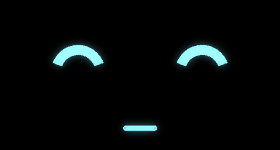

01 / 05, hardware + voice AI
Sila
صلة Worked an expo stand, 2 robots runningA desk robot that worked an expo stand as the salesperson, in Lebanese Arabic.
- Its own voice server: speech in, any OpenAI-compatible model as the brain, a custom voice, and a learning mode where the shop manager teaches it new answers.
- ESP32-S3 firmware with a 3.5" screen and an animated face; the body is generated in Python and 3D-printed, shaped like an HMC battery.
- Talks about batteries and solar in "amps", the unit Lebanese households think in. Now planned as a product line in four sizes.
- ESP32-S3
- ESP-IDF
- Python
- WebSockets
- LLM + TTS
- manifold3d


Speaking Lebanese Arabic